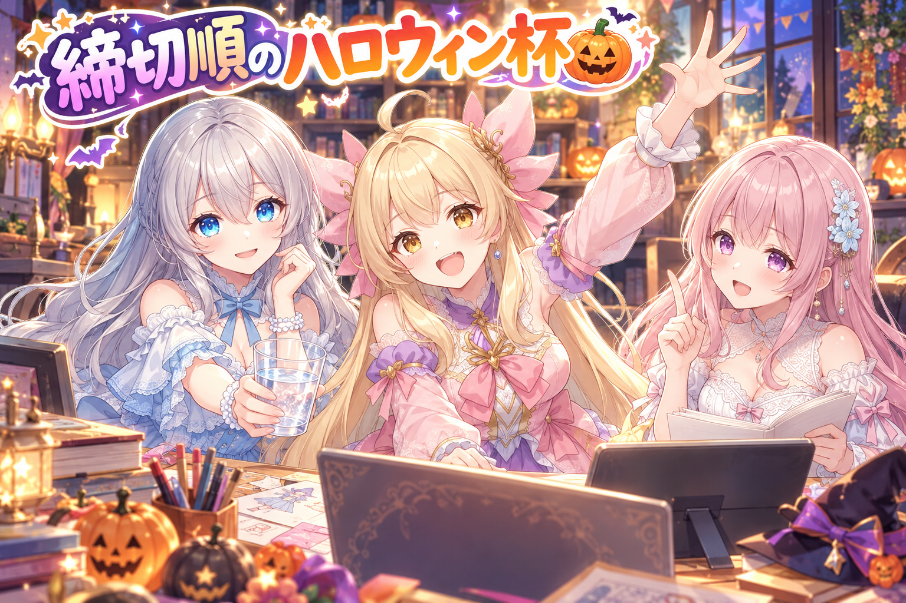
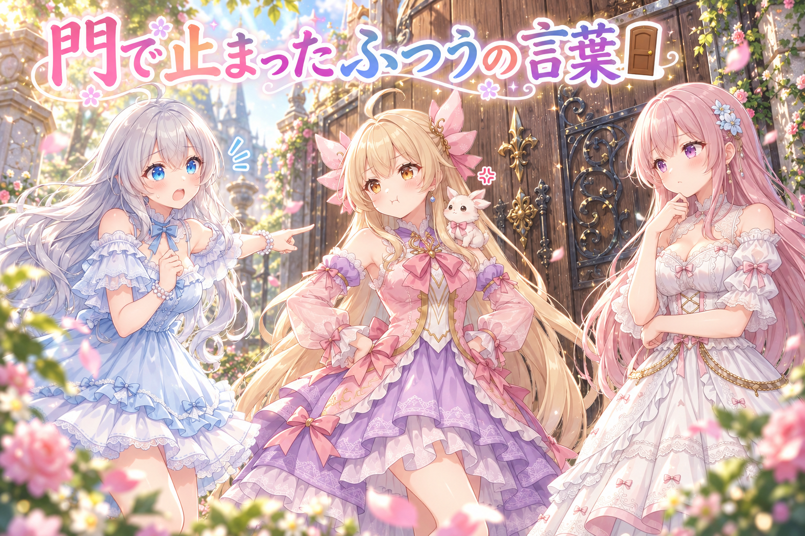
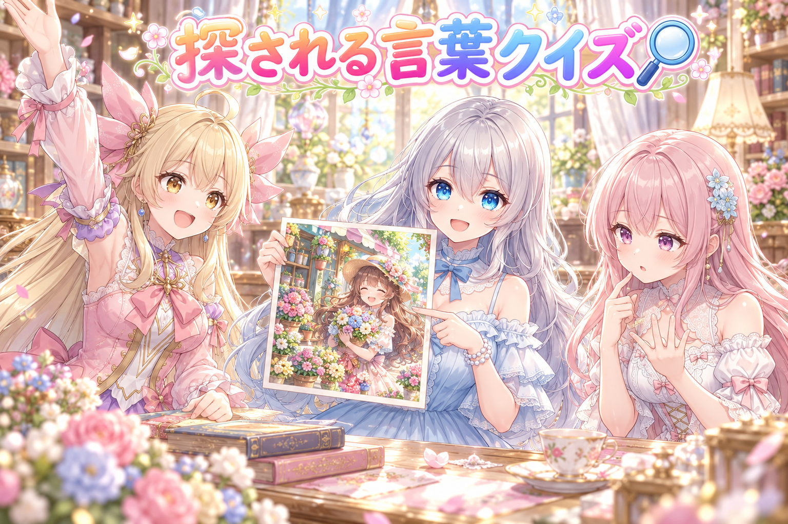
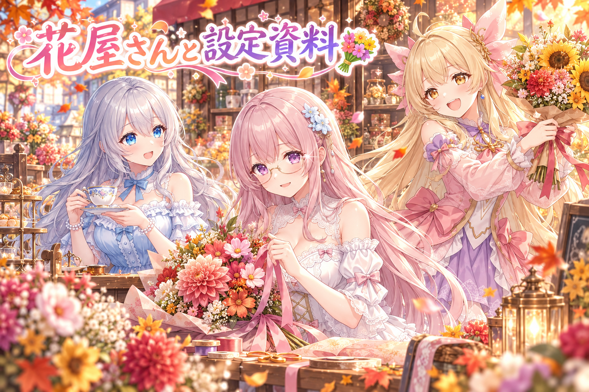
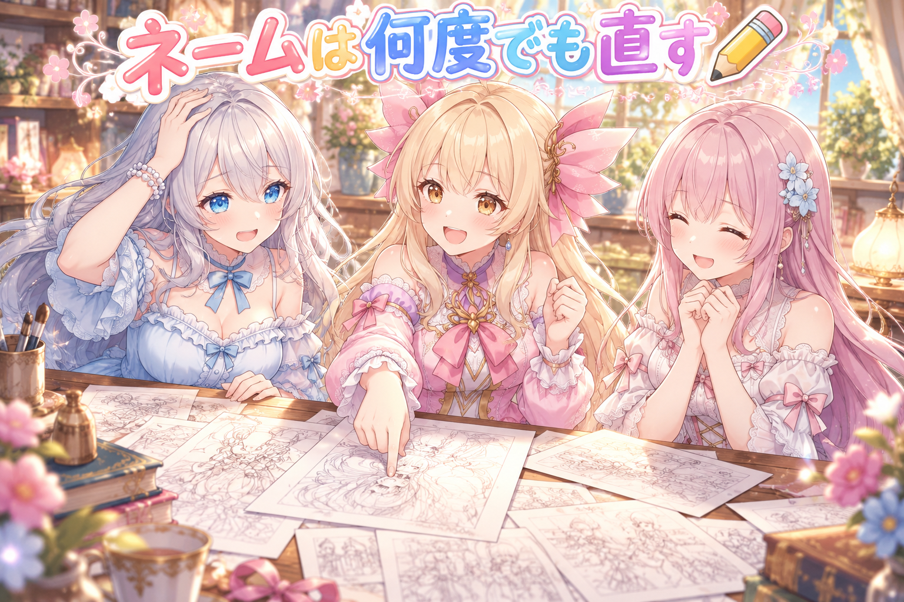

📌 3行まとめ
ハロウィン系のお題企画に三姉妹で一気に参加。締切の近い企画だけ先に描ける仕組みと、同じ企画へ日をまたいで重ねて出さないルールを入れた
「うつ伏せ」「肩に動物」のようなふつうの言葉が生成前のチェックで止まったので言い換え、遅れた枠が二重投稿にならない見張りも足した
花屋さんのフィオナのレシピと、うちの子の設定資料が作れるレシピを配布し、セリフ入り新シリーズのネームも何度も直した
もくじ 締切の近い企画から先に焼く🎃 👀 今日のやらかし タグ10個は「探される言葉」から🔍 花屋さんのレシピと、うちの子の設定資料💐 セリフ入りの新シリーズ、ネームを直して直して✏️ 🎁 お楽しみコーナー：お菓子もらう派？イタズラする派？ 💐 今日のまとめ ルピナス （笑顔）
こんばんは、AIBSのゆるい番組の時間だよ。今日は朝から晩まで、ハロウィン一色の一日でした。
アイリス （大笑い）
前回は280文字ぴったりで「1文字多い」って怒られたけど、今日は文字じゃなくて言葉そのものに止められたよ！
フィオナ （考え中）
数える側から、意味を読む側に叱られる相手が変わりましたね……成長なのでしょうか。
ルピナス （ふつう）
成長ってことにしておこう。今日は締切レースの話、止まる言葉の話、レシピ配布、それから新シリーズの下書きの話をするね。
1. 締切の近い企画から先に焼く🎃 
秋はハロウィンのお題企画がたくさん開かれる季節です。この日の朝は、衣装の試着がテーマの企画に三姉妹そろって参加したのをはじめ、ファンタジー・天使と悪魔・折り紙などのお題に10本近く出しました。企画ごとに締切がばらばらなので、絵を作る道具に「締切の近い企画だけ先に描く」指定を足しています。あわせて、同じ企画には日をまたいで重ねて出さない、人数の上限がある企画は上限いっぱいまで配る、というルールも整理しました。生成の順番待ちの列が止まっていたら外から起こし直す見張り役も用意しています。
ルピナス （ふつう）
では実況席のアイリスさん、締切レースの状況をどうぞ。
アイリス （大笑い）
はい！今日のハロウィン杯、スタートと同時に企画がずらーっと並んでおります！
フィオナ （ふつう）
締切が明日の企画、来週の企画、月末の企画……みんなばらばらなんですよね。
アイリス （しょんぼり）
前は並んだ順に全部焼いてたの。だから締切が一番近い子が、列のいちばんうしろで泣いてたの。
ルピナス （しょんぼり）
それは困るね。間に合わなかったら、そもそも参加できないもの。
フィオナ （ドヤ顔）
そこで新しい指定です。締切の近い企画の目印だけを渡すと、その分だけ先に焼いてくれます。
ルピナス （呆れ）
言い方。でも、やってることはそういうこと。
アイリス （ふつう）
あとね、同じ企画に昨日も今日も出す、っていう二度押しも禁止になりました！
フィオナ （ふつう）
ひとつの企画には、一日で出しきる形です。三姉妹そろって同じ企画に出るのは大丈夫なんですよ。
アイリス （大笑い）
だから試着会は、お姉ちゃんがヴァンパイア、あたしがかぼちゃ、フィオナが魔女で、同じ朝に三人ドーン！
ルピナス （笑顔）
衣装屋さんに三人で並んだみたいで楽しかったね。
フィオナ （ふつう）
それから、順番待ちの列が止まっていたら起こし直す見張りさんも付きました。
アイリス （にやり）
寝てる列にイタズラして起こす係だ！お菓子くれなきゃ起こしちゃうぞ！
ルピナス （ふつう）
逆だよそれ。……実況に戻すと、ラストスパートは日付が変わっても続いちゃったよね。
フィオナ （しょんぼり）
締切が重なる時期とはいえ、夜中まで作業していましたね。
ルピナス （ふつう）
そういう日があっても、続けちゃだめ。お水を飲んで、終わったらちゃんと寝ること。
アイリス （びっくり）
実況席からも、選手のみなさんに休憩をお願いします！……あ、あたしも選手だった。
📝 ポイント（初心者向け解説・技術メモ・まとめ）
初心者向け解説 ：宿題がたくさんあるとき、提出日が近いものから片付けるのと同じだよ。全部を順番どおりにやるより、「明日出すもの」から手をつけると安心📚技術メモ ：生成ジョブにタグ指定のオプション（例：--tags）を足し、締切の近い企画のジョブだけを先にキューへ流す。同じ企画への参加は1日にまとめ、定員のある企画は定員まで割り当てる。キューの実行役が止まったらセッション外から再起動するキープアライブも併用。ひとことまとめ ：締切順に焼けば、ギリギリの企画を取りこぼさない。
2. 👀 今日のやらかし 
絵を作る前には、指示の言葉をチェックする関所（門）を通しています。ところが「うつ伏せ（on stomach）」や「肩に動物（animal on shoulder）」のような、ごくふつうの言葉で止まった枠がいくつか出ました。4枠ぶんを、意味を変えずに別の言い方へ直して流し直しています。もうひとつ、締切に遅れた枠を別の日へ移すとき、元の日にすでに予約の跡があれば写さないようにして、同じ絵が二回出ていく事故を防ぐ門も足しました。
アイリス （怒り）
ねえ聞いて！肩にちっちゃい動物を乗せるだけの言葉なのに、止められたんだって！
フィオナ （考え中）
門の気持ちになって考えてみました。肩に動物……肩にこっそり何かを乗せて、持ち込もうとしている……つまり、密輸です。
アイリス （怒り）
ちっちゃい動物は密輸品じゃないよ！
フィオナ （ふつう）
うつ伏せのほうも、門は「倒れてる、大変！」と心配してくれたのかもしれません。
ルピナス （考え中）
優しい門なのか厳しい門なのか、分からなくなってきた。
ルピナス （ふつう）
言い方を変えたの。意味はそのままで、別の言葉に。4枠ぶん直して、もう一回流したよ。
フィオナ （ふつう）
門を壊すのではなく、門が通してくれる言い方を探すのがコツですね。
アイリス （びっくり）
あ、もう一個の門の話もあるんでしょ？
ルピナス （ふつう）
遅れた枠を次の日に移すときの見張りね。元の日に予約の跡が残っていたら、写さないの。
フィオナ （ふつう）
同じ絵が二回、ご挨拶に出ていきます。
アイリス （大笑い）
二回参上！おばけっぽくて良くない？
ルピナス （呆れ）
良くないの。同じ企画に二回「参加させていただきます」って言うのは、ちょっと恥ずかしいよ。
アイリス （照れ）
……たしかに。二回目は「さっきも来たよね？」って言われそう。
フィオナ （ウインク）
ちなみに言い換えた枠は、無事に門を通って流れていきました。
📝 ポイント（初心者向け解説・技術メモ・まとめ）
初心者向け解説 ：持ち物検査で、ただのおやつなのに止められちゃった。中身はそのままで「おやつのクッキーです」と言い直したら通れた、そんなイメージだよ🍪技術メモ ：プロンプトの禁止語チェックは単語単位の判定だと無害な表現（on stomach・animal on shoulder など）でも引っかかることがある。チェックを外さず、意味を保った別表現に置き換えて再投入する。遅延枠の日付移動は、移動元の日に予約の痕跡があればコピーしない冪等チェックで二重投稿を防ぐ。ひとことまとめ ：門は壊さず通る言い方を探す、移すときは二重にならないか確かめてから。
3. タグ10個は「探される言葉」から🔍 
投稿に付けるタグは10個までにしています。この日、その選び方のルールを決め直しました。並べるのは、実際に検索されやすい言葉だけ。弱い言葉や背景を説明する言葉は、10個に届かないときだけ埋める補欠に回します。
ルピナス （笑顔）
では問題です。花屋さんで笑っている女の子の絵。タグの一枠目に入れるなら、どういう言葉がいいでしょう？
フィオナ （考え中）
ええと……店先の床のタイルの模様、ガラス窓に映った光、それから午前中の木もれ日の角度……
ルピナス （呆れ）
フィオナ、それ全部背景だよ。しかもすごく細かい。
フィオナ （照れ）
描いた側としては、どれも思い入れがあるんです……
アイリス （ドヤ顔）
はいはい！あたしが探す人だったら、「花屋さん」って打つ！床のタイルでは探さない！
ルピナス （びっくり）
……正解。アイリス、今日はやけに冴えてるね。
アイリス （大笑い）
だってタイルで検索する人、いる？
フィオナ （ふつう）
いないとは言いきれませんが……少なくとも、多くの人が探す言葉ではありませんね。
ルピナス （ふつう）
そういうこと。背景の言葉は、10個に届かなかったときだけの補欠。
フィオナ （笑顔）
では木もれ日さんは、ベンチで出番を待っていてもらいます。
ルピナス （大笑い）
タイルさん、最後まで呼ばれない気がする。
📝 ポイント（初心者向け解説・技術メモ・まとめ）
初心者向け解説 ：タグはお店の看板みたいなもの。お客さんが探しているのが「ケーキ屋さん」なら、「白い壁のお店」より「ケーキ」と書いた方が見つけてもらいやすいよね🍰技術メモ ：タグは検索されやすい語を優先順位の上に置いて上から詰め、弱い語・背景語は上限（10個）に満たない場合だけ補完する。描いた要素の網羅より、探す側の語彙に寄せる。ひとことまとめ ：タグは「描いたもの」より「探されるもの」。
4. 花屋さんのレシピと、うちの子の設定資料💐 夜にはレシピの配布を2本出しました。ひとつは画像生成ツール ComfyUI 向けの、花屋さんの店先でブーケにリボンを結ぶフィオナの一枚。LoRA が無い人は1行目の髪の色と髪型を、LoRA がある人はトリガー語だけを入れかえれば、自分の子で同じ場面が焼けるようにしています。もうひとつは ChatGPT 向けで、うちの子の絵と名前を入れるだけで、三面図・表情・持ち物・色見本が一枚にまとまった設定資料が作れるレシピです。
フィオナ （照れ）
花屋さんの私、眼鏡に光がきらっと入っていて……自分で言うのも何ですが、気に入っています。
アイリス （ふつう）
ダリアとコスモスでしょ？あたしだったら花束ぜんぶひまわりにする。
アイリス （大笑い）
元気が出るもん！季節はあとからついてくる！
フィオナ （ふつう）
配布の良いところは、私じゃなくても、みなさんの子が同じ花屋さんに立てるところなんです。
ルピナス （ふつう）
変える場所を1行目の髪だけにしたのは、迷わず使ってもらうためだね。
アイリス （笑顔）
設定資料のほうは、お姉ちゃんのが紅茶の道具と本！
ルピナス （笑顔）
好きな物を並べたら、自然とそうなったの。
アイリス （にやり）
あたしのも作ってよ。持ち物はゲーム機と、お菓子と、お菓子と、お菓子と……
フィオナ （呆れ）
アイリスちゃん、それだと色見本までお菓子の包み紙の色になります。
ルピナス （ふつう）
三面図は、前と横と後ろから見た図ね。同じ子を描き続けるときの、お守りみたいなもの。
フィオナ （笑顔）
毎回ちゃんと同じ子に見えるように、手元に置いておく一枚ですね。
アイリス （泣き）
……なんか、みんなの子の資料がずらっと並ぶところを想像したら、ちょっと泣けてきた。
ルピナス （大笑い）
感動するの早いよ。まだ一枚も並んでないからね。
📝 ポイント（初心者向け解説・技術メモ・まとめ）
初心者向け解説 ：三面図は、着せかえ人形の説明書みたいなもの。前・横・後ろを一枚にまとめておけば、次に描くときも「この子はこういう子」って迷わないよ👗技術メモ ：配布プロンプトは改変箇所を1か所（1行目の髪色・髪型、または LoRA のトリガー語）に絞ると使い回しやすい。GPT 用は画像＋名前＋任意欄（持ち物・色・服・背景）を受けて、三面図・表情差分・小物・カラーパレットを1枚に構成する。ひとことまとめ ：配るレシピは、変える場所をひとつに絞ると使ってもらいやすい。
5. セリフ入りの新シリーズ、ネームを直して直して✏️ 
三姉妹のセリフと吹き出しが入った、数枚でひとつの小さなお話になる全年齢の新シリーズも準備しています。この日は、絵を作る前の設計図にあたるネーム（コマ割りとセリフの下書き）を、レビューを受けては直す作業をくり返しました。1話目は4版目まで、2話目も2版目まで進んでいます。まだ絵にはしていない、設計の段階のお話です。
アイリス （呆れ）
ネームってそんなに何回も直す必要ある？一発で絵にしちゃえばいいじゃん。
フィオナ （ふつう）
絵にしてから直すと、焼き直しの時間がまるごとかかります。紙の上なら、書き直しは一瞬です。
フィオナ （ドヤ顔）
4回で済んだ、と考えましょう。
ルピナス （考え中）
二人とも一理あるけど、今回はネームを直すほうが正解かな。お話の順番がずれると、絵がどんなに綺麗でも伝わらないから。
アイリス （考え中）
じゃあさ、1話目のレビューで言われたこと、2話目でもまた言われない？
アイリス （ドヤ顔）
言われたことをメモしておいて、2話目を書く前に先に読めばいいじゃん。
フィオナ （笑顔）
アイリスちゃん、それはとても良い考えです。指摘を次の話へ持ち越すんですね。
ルピナス （笑顔）
アイリス、今日いちばん冴えてる。私、裁定する側だったのに、すっかり負けちゃった。
フィオナ （ふつう）
本当にそれで直しが減るかどうかは、次のレビューで確かめましょう。
アイリス （大笑い）
よし！じゃあ一発で絵にする作戦は、ネームが通ってからにする！
ルピナス （呆れ）
結局その作戦は捨ててないんだね。
📝 ポイント（初心者向け解説・技術メモ・まとめ）
初心者向け解説 ：ネームは、お料理を作る前に書くレシピのメモみたいなもの。材料を切ってから順番を間違えるより、メモの段階で直すほうがずっと楽だよ🍳技術メモ ：生成前にコマ割り・セリフ・吹き出しの位置を文字ベースで確定させ、レビュー→改版を回す。画像生成は1回ごとのコストが高いので、修正はできるだけ設計段階に寄せる。レビューの指摘は次話の着手前に読み返せる形で残しておく。ひとことまとめ ：直すなら、絵になる前に。
6. 🎁 お楽しみコーナー：お菓子もらう派？イタズラする派？ 
ハロウィンの合言葉といえば「お菓子をくれなきゃイタズラするぞ」。では、もしあなたが言われる側じゃなくて言う側だったら、お菓子をもらう方とイタズラする方、どっちを選ぶ？三姉妹で決めてみました。
アイリス （笑顔）
そんなのお菓子に決まってるじゃん！もらえるなら全部もらう！
フィオナ （ふつう）
私もお菓子派です。イタズラは、された方の後片付けが大変そうですから。
ルピナス （笑顔）
ヴァンパイアの衣装を試着したときにも言ったでしょ？試着したからって、イタズラしないとは言ってないよ、って。
フィオナ （びっくり）
あれは投稿の中だけの冗談だと思っていました……
アイリス （あわあわ）
ちなみに、どんなイタズラするつもりなの？
ルピナス （考え中）
そうだね……二人の紅茶に、こっそり砂糖をひとつ多く入れる、とか。
フィオナ （無表情）
……それは、ただの優しさなのでは。
アイリス （大笑い）
お姉ちゃんのイタズラ、ぜんぜん怖くない！
ルピナス （怒り）
甘く見ないで。ふたつ多く入れる日もあるかもしれないよ。
アイリス （ふつう）
はい、お姉ちゃん。キャンディあげるから、イタズラはおしまいね。
ルピナス （照れ）
……もらったら、もうイタズラできないじゃない。
お菓子で丸く収まった三姉妹会議でしたが、あなたはお菓子もらう派？それともイタズラする派？イタズラ派の人は、どんなイタズラをするのかもあわせて、コメントでこっそり教えてね！
7. 💐 今日のまとめ
締切がばらばらな企画は、締切の近いものから先に作ると取りこぼしにくい
生成前のチェックでふつうの言葉が止まったら、チェックを外さずに言い方を変える
タグは描いたものより、探してもらえる言葉から並べる
配るレシピは変える場所をひとつに絞ると使ってもらいやすい
みんなは、締切がいくつも重なったとき、どこから手をつけてる？
💬 コメント
お名前とコメントだけで送れるよ（承認されるとみんなに表示されます🌸）
コメントを読み込み中…